나의 인생을 한 장의 그래프로 표현해봅시다
워크시트에 자유롭게 그려주세요. 주요 사건이나 전환점을 표시해봅시다.
EX팀 | 박예영
기술 스펙 암기가 아닌, IT 서비스 흐름 속에서의 '역할'을 이해하는 시간입니다.
Client (요청)
웹/앱 화면
'이 정보를 보여주세요'라고 요청
Server (응답)
요청을 이해하고,
작업을 처리하고, 결과를 반환
Past
단순한 선형 구조
Monolithic
WEB-WAS-DB 구조,
구성 요소가 명확하고 추적이 용이
Present
복잡한 웹 구조
Microservices & Cloud
수많은 마이크로서비스가 상호작용하는
복잡한 메시 네트워크, 장애 지점 파악이 어려움
초 단위 실시간 모니터링을 통해 문제 상황을 빠르게 인지하고, 모든 성능 지표에 대한 데이터 수집 및 분석을 통해 Database의 가용성 및 성능을 효율적으로 관리하는 솔루션
End-to-End 거래추적을 통하여 전 구간의 성능 관리를 통합적·효율적으로 수행하기 위한 Application 성능 모니터링 솔루션
인프라
클라우드
로그
하이브리드 환경에서 IT 전 영역의 인프라와 서비스를 One 플랫폼 기반으로 모니터링하고 분석하는 IT 통합 성능 관리 솔루션
Structured Data
(RDB)
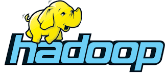
Unstructured Data
(Big Data)
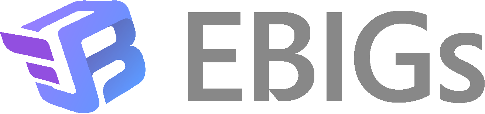
+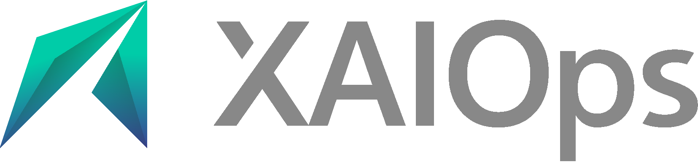
AI 기반 IT 운영 지능화기업 내부(폐쇄망) 프라이빗 LLM 플랫폼
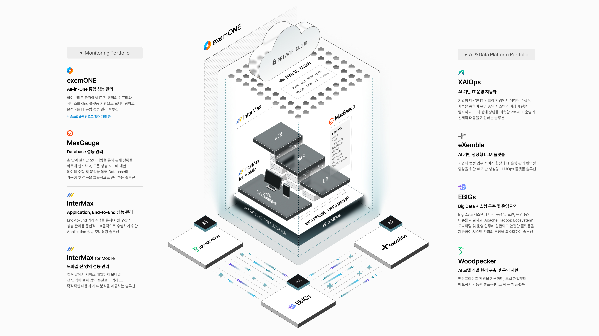
엑셈은 단순 솔루션 판매사가 아닌, 고객 서비스의 안정을 지키는 파트너입니다.
여러분은 지금 어디에 서 있나요?
엑셈 핵심가치 워크샵
1. 앞에 보이는 동그라미 30개를
2. 서로 다른 것으로 채워주세요.
3. 제한시간은 단 3분
아이디어를 끌어내는 IDEO의 방식
30 Circles Challenge
온전할 전 낱 개 하나 일 같을 여
최대한 큰 구조의 피라미드를 만들어야 한다!
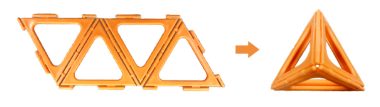
삼각형 4개를 붙여
정사면체 1개를 만듭니다.
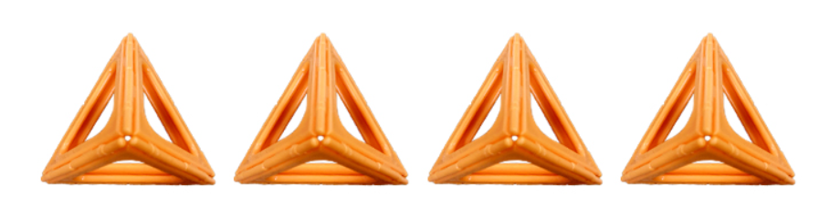
1)의 과정을 반복해
정사면체 4개를 만듭니다.
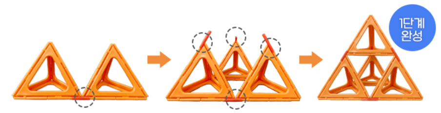
정사면체 4개의 각 꼭지점을
연결대를 이용해 고정합니다.
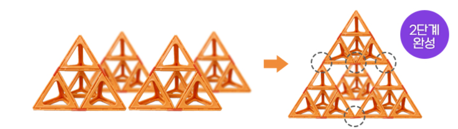
1)~3)의 과정을
반복합니다.
우리는 왜 일을 할까?
"Needed to live humanly it is very simple.
Someone to love and to work, Only these two."
"인간답게 사는 것은 아주 간단해요.
사랑하는 사람과 할 일, 이 두가지 뿐이죠."
영화 <인턴> 중에서
최고를 지향하는 전문가 제국
더 나은 무엇이, 그리고 방법이 있을 거란 생각으로
끊임없이 탐색하고 선택한 것의 향상을 멈추지 않는 것
+ 열정으로 만든 결과, 타인으로부터의 리스펙트
시대와 기술의 변화를 민첩하게 읽어내고,
환경과 상황에 맞춰 빠르고 유연하게 대응하는 것
반드시 해낼 것이란 절대적 믿음 + 오늘은 여전히 어려울 것이란 냉혹한 현실 직시
무지의 초능력 & 고통은 선물
1년짜리 완벽한 계획을 세우는 것
(근거 없는 낙관)
계획 없이 무작정 시작하는 것
(무모함)
완벽한 계획은 없음
(무지의 초능력)
장기적인 비전은 확고함
(스톡데일 패러독스 희망)
단기로 자주 점검하며 조정
(스톡데일 패러독스 현실 직시 + 고통은 선물)
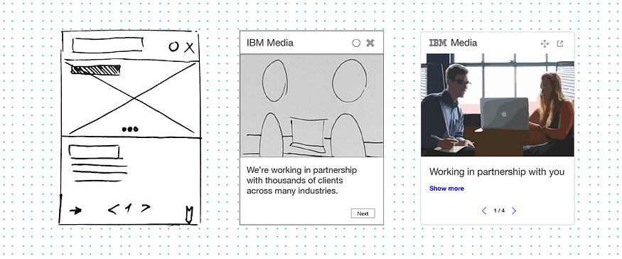
방향성 점검
피드백 수렴
완성도 향상
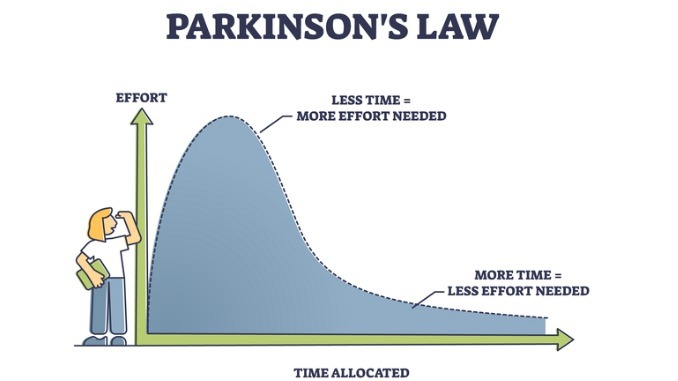
업무에 주어진 시간이 늘어나면, 일은 그 시간을 다 채울 때까지 늘어난다.
무언가에 흠뻑 빠져 머리 속의 생각과 목표, 행동 등
모든 정신을 한 곳에 집중하는 상태
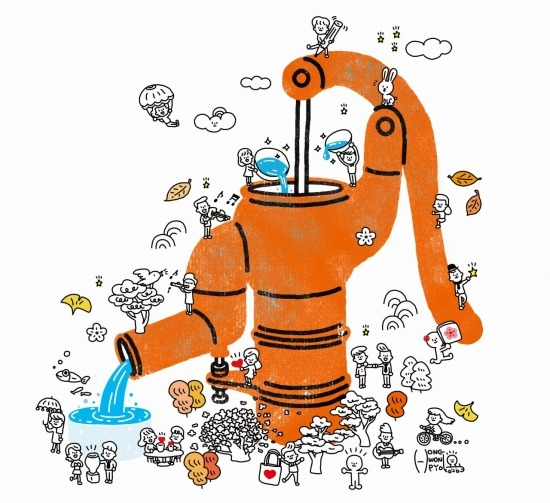
몰입에는 마중물이 필요합니다.
처음 몇 시간의 고통이 바로 마중물입니다.
그 고통을 지나면, 물이 쏟아지듯 몰입이 시작됩니다.
일은 혼자 하는 게 아니라, 관계와 커뮤니케이션을 통해 완성됩니다.
고객가치와 전사 우선 순위를 인식하며
업무를 수행한다.
서로를 성장시키며 시너지를 창출할 수 있는
관계를 형성한다.
사실 기반으로 투명하고
진정성 있는 소통을 한다.
가장 거대한 철학은 가장 작은 관계에서 시작됩니다.
우리의 일은 무엇일까?
창립 26년간
출판 도서
강의 & 세미나
누적 시간
강의 & 세미나
참여 인원
온라인
기술 기고
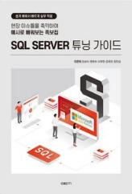
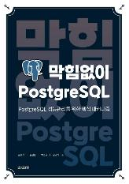
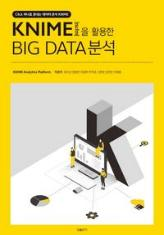
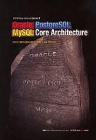
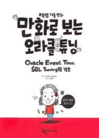
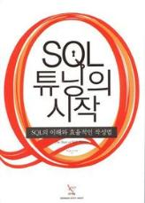
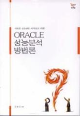
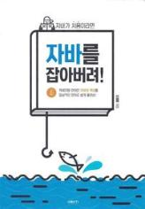
"세상은 경이로움으로 가득 차 있고,
인생은 매순간
그 경이로움을 만나는
모험 여행이다."
《연금술사》 파울로 코엘료
"We will find a way. We always have."
"우리는 답을 찾을 것입니다. 늘 그랬듯이."
영화 《인터스텔라》 중에서
철학자(Philosopher)와 혁신가(Innovator)의 결합
Philosopher
일상 업무를 지식 생산 과정으로 인식하고,
그 속에서 본질과 의미를 찾아내는 것
Innovator
발견한 지식을 현실에 적용해 변화를 창출하고,
비효율을 개선하며 새로운 가치를 만들어내는 것
여러분의 일이 무엇이든,
세상에 없던 유니크한 지식을 더하는 과정으로 바라본다면,
엑셈은 구성원 모두가 철학하는 마음과
혁신하는 마음을 통해 성장하는 기업입니다.
PHILOSOPHER
철학하는 마음은,
지식생산이 우리의 일상이기 때문에 생기는 마음입니다.
우리의 학습과 경험, 그 결과인 지식은 시공을 초월한 진정한 유산입니다.
이 깨달음을 통해 우리는 일터에서 더욱 탁월해집니다.
INNOVATOR
혁신하는 마음은,
지식생산이 연결의 양과 속도를 가속화하기 때문에 생기는 마음입니다.
이를 통해 지식 생산은 생명과 의식이 물질에 스며드는 현상을 촉진합니다.
지식생산자인 우리는 물질 세계를 깨우는 혁명가이자 혁신가입니다.
PHILINNOVATOR
초연결시대에 철학자와 혁신가는 지식생산자의 본질입니다.
세상을 깨우는 진정한 유산을 남기는 사람들, 우리는 필리노베이터입니다.
QR 코드를 스캔하여 게임에 참여해주세요.
최종 탈출 후 스크린샷을 메신저로 제출하면 완료!
1등에게는 Expresso 음료 쿠폰을 드립니다.
엑셈의 WOW 중
가장 인상 깊었던 2가지를 골라
실제 업무에 어떻게 적용할지 토의하기
구체적으로 작성하기!
전개일여
개인의 성장이 곧
엑셈의 성장
필리노베이터
철학자 + 혁신가의
마음을 가진 엑셈인
PSF + 3P
개인 핵심가치와
조직 핵심가치의 실천
오늘부터 매일
10/50/90 Rule로
단기 점검과 조정
업무 현장에서
일상의 반복 속에서
패턴과 본질을 발견
WOW한 경험 제공
지식 생산과 공유
즐겁게 슬기롭게
일을 통해 전문가로 성장을 이루는 곳
리더가 되어 더 큰 성장을 이루는 곳
"Love and work, work and love.
That's all there is."
사랑하고 일하라, 일하고 사랑하라.
그게 삶의 전부에요.
© 2001~2026 EXEM CO., LTD. All Rights Reserved.